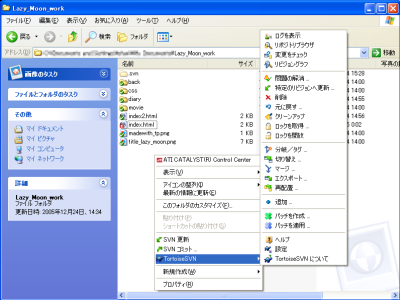

シュンの日記
2005年12月
12月26日
あれ？ 持ってない？
電車の中で聞く『ETERNAL BLAZE』・・・イイ・・・となるはずが、プレイヤーを部屋におきっぱなしの罠。
くそぅ、ナゼだ？ めちゃくちゃ悔しい。
12月25日
メリークリスマス？
あれ？ クリスマスらしいこと、何にもしてなくないか、オレ。
しかも今日の買い物が、元職場の先輩に布教されて買った『ETERNAL BLAZE』（水樹奈々）ってあたり、オタってるし。
12月24日
復活、できるのか？
２年も更新していなかったわけで。
日記ぐらいつけ始めようかな、と思ってみたりしたり、しなかったり。
バージョン管理できるらしい Subversion
職場にて CVS というファイルのバージョン管理ツールを使っていたのだが、 よりよいものを探して、これにたどり着いた。
名を Subversion といふ。「CVS の設計思想はかなり優れているが、実装がまずかった。 古い実装を取り払い、一から作り直そう。」という意図で 2001 年から作られ始め、 04 年に世に出てきたとか。
Subversion 自身は CUI ツールだが、Eclipse プラグインの「Subclipse」や、 Windows エクスプローラー組み込み型の「TortoiseSVN」と組めば、 GUI 操作も可能。
さっそく使い勝手を試すため、このサイトのデータ各種を管理し始めたクリスマスイブの日のこと・・・。
ちなみに、今はコマンドプロンプト版と TortoiseSVN を併用中だ。
TortoiseSVN 実行中の様子
TortoiseSVN は右クリックでマウス操作〜。
コマンドプロンプトは難しいって人にも、日本語 GUI なら使ってもらえそう？

Subversion 関連サイト
- 本家（英語）
- GUI ツール
- tortoisesvn.tigris.org（英語）
- All-In-One Eclipse FrontPage（Eclipse 自身と便利プラグインの一括インストーラー）
- 解説サイト・・・と思ったがメンドクなってきた。あとは Google 様にお願い
- Subversionの基礎練習（著：結城浩）。導入から第１歩まで。
- Subversion によるバージョン管理（訳：上平 哲）。完璧すぎるマニュアル、しかし読みきるのは大変だ。